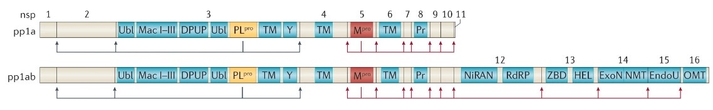

After SARS-CoV-2 releases its RNA genome into the host cell, two pivotol open reading frames from the genomic RNA, ORF1a and ORF1b are translated by utilizing ribsomes of the host cell. Following translation, the large polyproteins pp1a and pp1ab are produced and post-translationally processed and cleaved into individual functional non-structural proteins (nsps). Located at the endoplasmic reticulum (ER), the nsps contribute toward forming a Replication and Transcription Complex (RTC) to form structures such as double-membrane vesicles (DMVs) and convoluted membranes (CMs) using the membrane of the ER to build them. The RTC functions to perform replication and transcription of the SARS-CoV-2 genome. Once sufficient copies of the genomic RNA and viral proteins are synthesized within the RTC, they are transported to the Golgi apparatus to initiate the process of assembling virions2.
While the virons are assembled within the Golgi apparatus, Furin - a proprotein convertase produced within the human cells (Fig. 2) - actively cleaves an amino acid sequence motif (PRRAR) located within the S1/S2 junction unique to the SARS-CoV-2 spike protein1,2. Cleavage of this sequence motif, subsequently activates the SARS-CoV-2 spike protein to effectively bind other host cells. Following activation of the spike protein, virion assembly is completed and the virions are transported to the cell surface through the process of exocytosis using subcellular vesicles as a means of transport. Once the viral particles exit the infected host-cell, it is through this step that the newly formed virions are ready to infect other host cells and repeat the replication cycle.